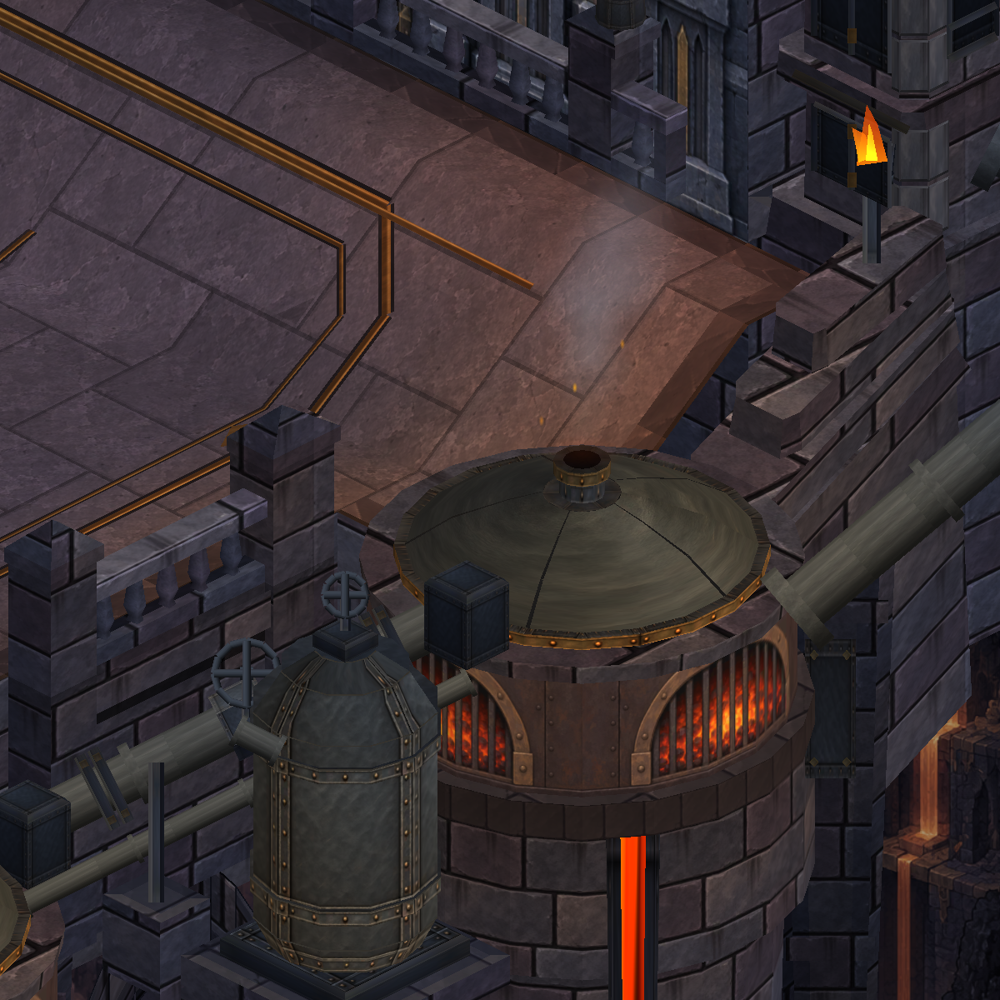
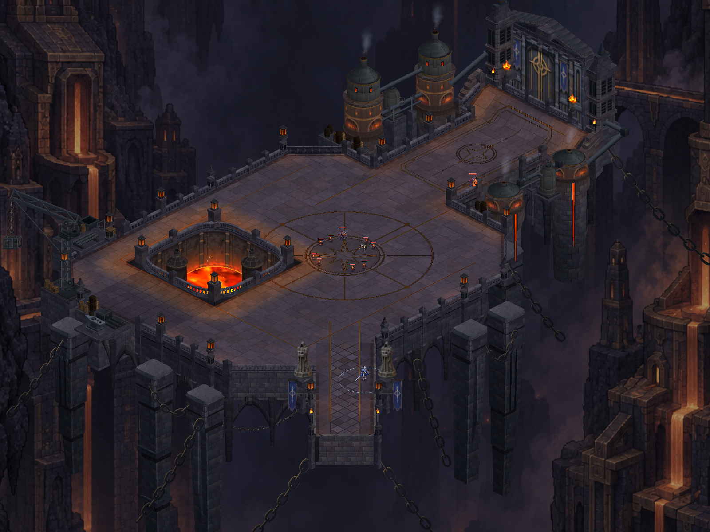
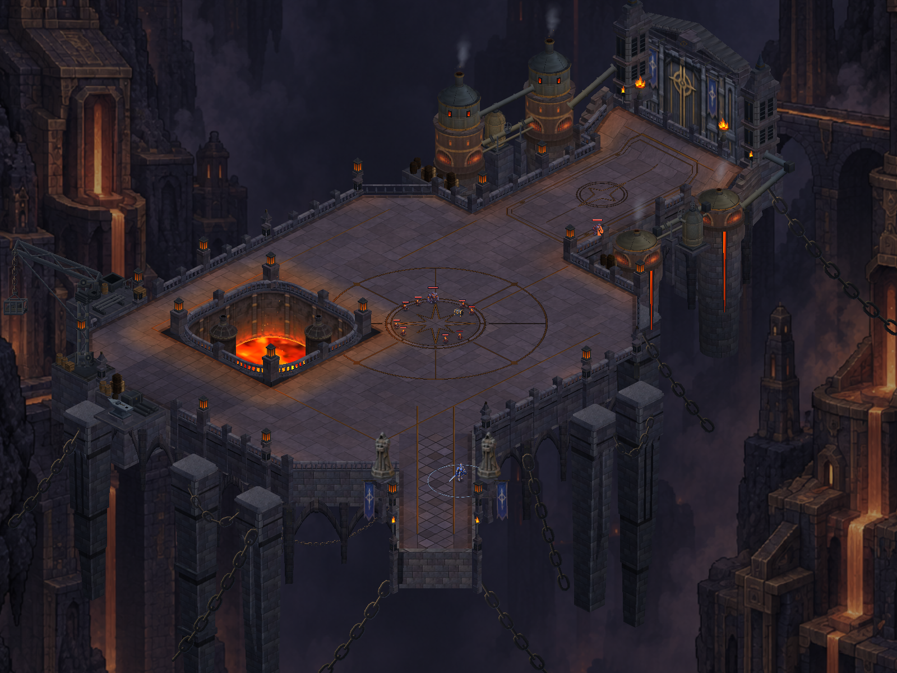
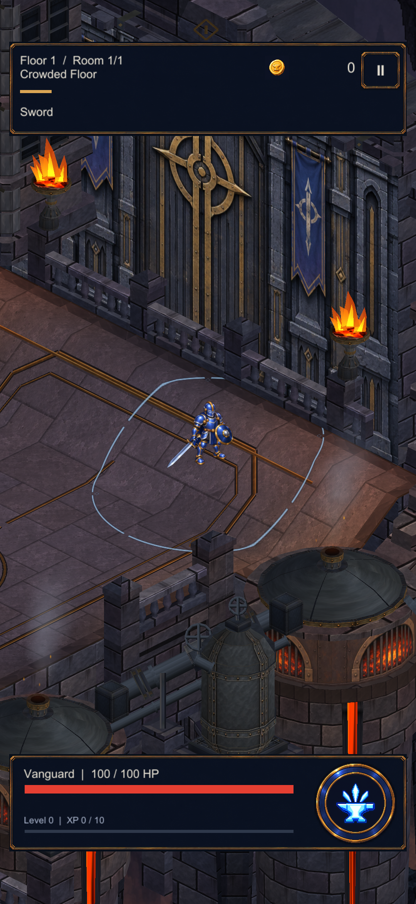
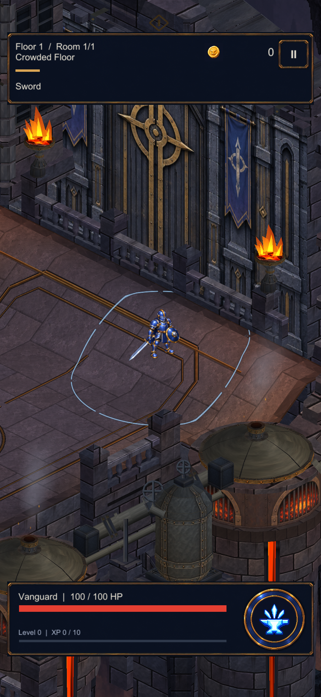
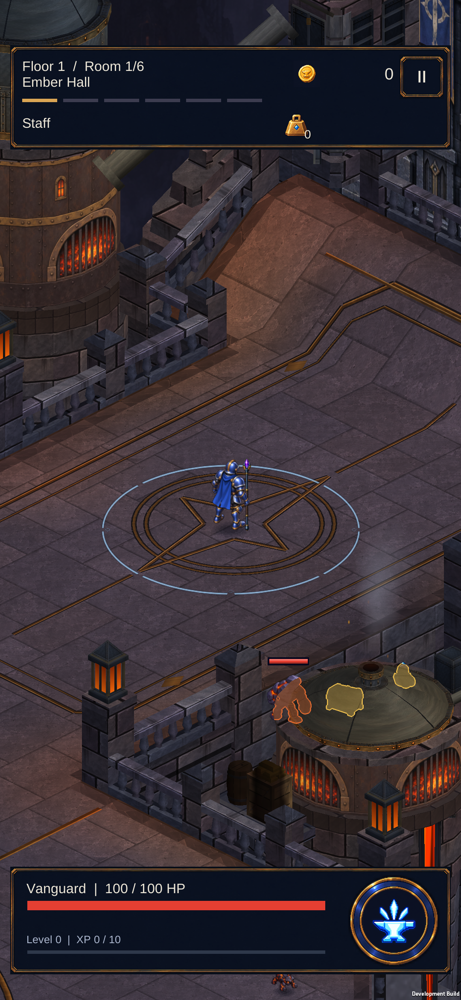
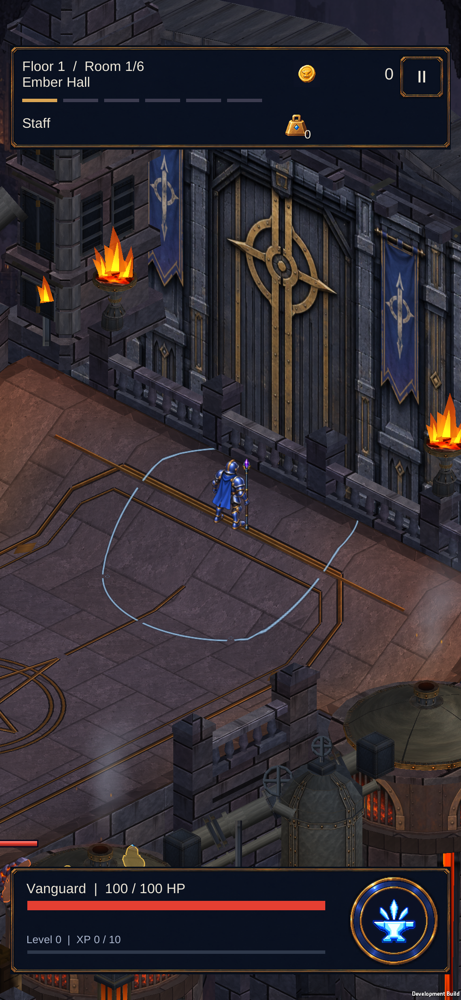
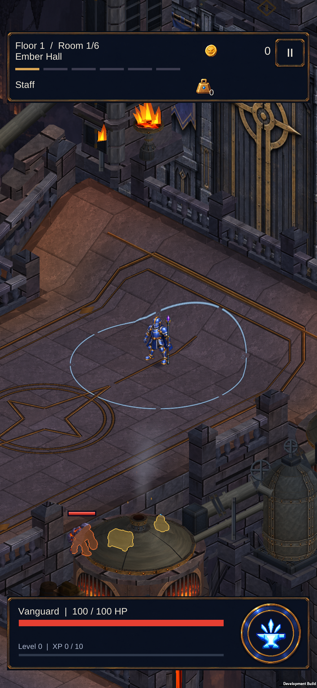
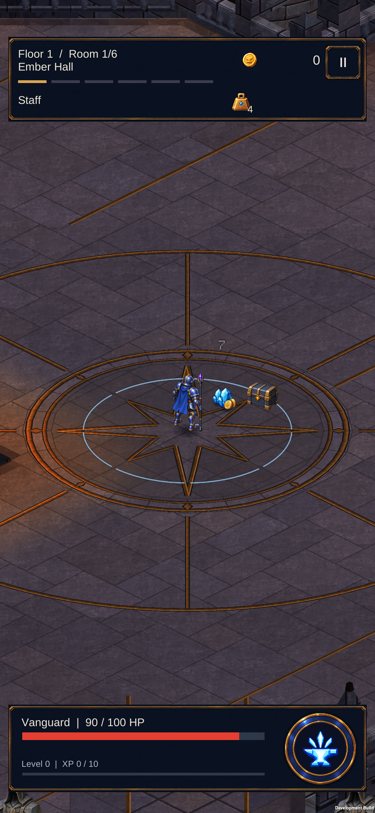

Fırın ışığı artık metalde de okunuyor
Kazan demiri, basınç boruları ve rezervuarların yüzeyleri mevcut fırın kaynaklarından sıcaklık alıyor. Işık kaynağından uzaklaştıkça ve yükseldikçe etki azalıyor; metalin gölgeli tarafı korunuyor. Hesap sahne kurulurken yapılıyor.
Kazan, boru ve rezervuar
 Önce
Önce
SonraHaritanın bütünü

Önce
SonraGerçek oyun kamerası

Önce
SonraGörüntüler aynı kameralardan gerçek Unity çıktılarıdır; karakter konumları inceleme için sahnelenmiştir. 395 .NET, 415 EditMode ve 150 PlayMode testi geçti; Android paketi S23’e kuruldu.
Tam harita · Kapsam ve doğrulama
S23 cihaz kontrolü
Kapıya yürüyüş ve rampadan dönüş gerçek sürüklemelerle kontrol edildi. Son görüntü ayrı bir normal savaş koşusudur. Profil ve özgün geliştirme bayrakları korundu; oyun kapatıldı.

Kapı yaklaşımı: kazan ve borularda sıcak yansıma
Yükseltilmiş kapı eşiği
Rampadan dönüş
Normal Staff savaşı ve ödüller